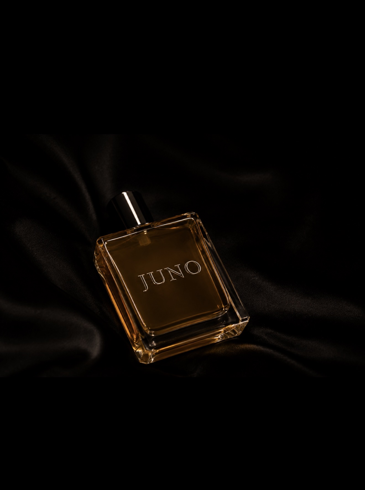

SCENE 04 // GETTING READY
THE ROOM
REMEMBERS.
JUNO is the first fragrance by STARGIRLS — sensual, close, and made around the feeling that somebody left but somehow still feels present.
STARGIRLS BEAUTY // FILE 001
WHAT YOU LEAVE
BEHIND.
The music can stop. The room can empty. The scent is the part that refuses to leave with everybody else.

THE OBJECT
JUNO
EAU DE PARFUM.
Not a piece of tour merch. Not a novelty tied to one song. A fragrance that lives inside the STARGIRLS world but can stand on its own.
EAU DE PARFUM
A fragrance designed to stay close and become part of how the night is remembered.
LOVE / DESIRE
Warm attraction, closeness and the little bit of danger that makes memory stick.
COMING NEXT
Final launch details will appear when the drop is ready.
THE FEELING
YOU LEFT.
IT DIDN'T.
That is the fantasy behind JUNO: not being the loudest person in the room. Being the person the room still feels after you're gone.
GET DRESSED.
PLAY THE SONG.
JUNO is one part of the same movie. The clothes are what you wear into it. HAYATI is what is playing while you get ready.